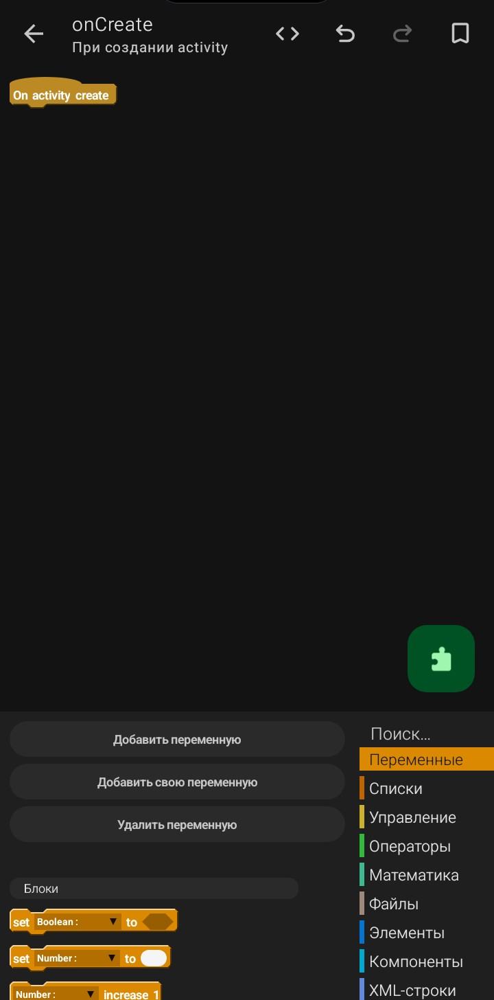

Палитра блоков

Палитра блоков — это боковая панель на блочном полотне, где собраны все доступные блоки. Отсюда ты перетаскиваешь блоки на полотно, чтобы собрать логику события.
Палитра появляется, когда ты открываешь событие на редактирование (тап по стрелке > слева от события). На самой вкладке «События» палитры нет — только список событий.
Где находится палитра
- Появляется при открытии события.
- Расположена в правой части блочного полотна — вертикальная панель со списком категорий.
- Содержит категории блоков, сгруппированные по назначению.
- Прокручивается вертикально.
Как устроена палитра
- Строка поиска — вверху палитры, поле «Поиск…».
- Заголовки категорий — например, «Переменные», «Списки», «Управление», «Операторы», «Математика», «Файлы», «Элементы», «Компоненты», «XML-строки».
- Блоки — раскрываются при выборе категории и перетаскиваются на полотно.
- Цвет — блоки одной категории имеют схожий цвет.
- Форма — блоки разной формы (команды, значения, условия) выглядят по-разному.
Основные категории блоков
| Категория |
Что содержит |
| Переменные |
Создание, чтение, запись значений переменных. |
| Списки |
Массивы и работа с ними. |
| Управление |
Циклы, ветвления, вызов More Block. |
| Операторы |
Условия и сравнения: =, ≠, >, <, «и», «или», «не». |
| Математика |
Арифметика, случайные числа. |
| Файлы |
Сохранение и чтение файлов. |
| Элементы |
Работа с виджетами: setText, setVisible, setBackground. |
| Компоненты |
Работа с сервисами: Intent, SharedPreferences, RequestNetwork. |
| XML-строки |
Работа со строками и XML-ресурсами. |
Как работать с блоками в палитре
- Добавить — перетащить блок из палитры на полотно. Обычный тап по блоку ничего не делает.
- Найти — использовать строку поиска «Поиск…» вверху палитры или прокрутить до нужной категории.
- Понять назначение — прочитать текст на блоке и посмотреть на форму.
- Раскрыть категорию — тап по заголовку категории показывает список блоков.
⚠️ Важно: блок попадает на полотно только перетаскиванием. Обычный тап по блоку в палитре не добавляет его и не выводит никаких подсказок.
Куда вставлять блоки
- Последовательные блоки — друг под другом на полотне.
- Вложенные (условия, циклы) — в «карман» условия или цикла.
- Значения — в «дырки» других блоков.
Дополнительные панели при открытом событии
| Элемент |
Где находится |
Что делает |
| Плашка события |
В левом верхнем углу полотна. |
Показывает название события (например, «On activity create»). Блоки вставляются под ней. |
| Иконка пазла |
Зелёная кнопка справа внизу. |
Открывает палитру блоков, если она скрыта. |
| Добавить переменную / свою переменную / удалить |
Внизу слева. |
Управление локальными переменными события. |
| Строка «Блоки» |
Над палитрой. |
Список добавленных блоков, отсортированных по типу. |
⚠️ Важно: не все блоки видны сразу. Некоторые появляются только после подключения компонента (например, RequestNetwork, SharedPreferences, Intent). Чем больше компонентов в проекте — тем больше блоков в палитре.
⚠️ Важно: не все блоки универсальны. Блок setText работает только с виджетами типа TextView. Блок setChecked — только с CheckBox, Switch, RadioButton.
⚠️ Важно: цвет и форма блока важны. Не пытайся вставить блок-значение в последовательность команд — форма не совпадёт. Так же не получится вставить команду в «дырку» для значения.
💡 Совет: если не можешь найти блок — используй строку поиска «Поиск…» вверху палитры.
💡 Совет: изучай палитру постепенно. Начни с базовых: Toast, setText, if...do. Потом переходи к переменным, циклам, компонентам.
💡 Совет: не пугайся количества блоков. В реальных проектах используется лишь небольшая часть. Остальные — для специфических задач.
💡 Совет: если блок «не вставляется» — проверь форму. Возможно, ты пытаешься вставить его не в то место.
❌ Частая ошибка: тапают по блоку в палитре и ждут, что он появится на полотне. Нужно именно перетащить.
❌ Частая ошибка: добавляют блоки вне события. Они должны быть внутри события на полотне.
❌ Частая ошибка: путают блоки из разных категорий. onClick — это не блок, а событие. setText — блок. Не ищи события в палитре блоков.
❌ Частая ошибка: пытаются вставить команду в «дырку» для значения. Например, блок Toast — не вставится в поле getText. Это разные формы.
❌ Частая ошибка: не искать нужный блок в правильной категории. Например, setVisible — в категории «Элементы», а не в «Управлении».
Резюме
- Палитра блоков — боковая панель на блочном полотне.
- Появляется только при открытии события.
- Содержит строку поиска, категории и блоки внутри них.
- Основные категории: Переменные, Списки, Управление, Операторы, Математика, Файлы, Элементы, Компоненты, XML-строки.
- Блок попадает на полотно только перетаскиванием — тап по блоку ничего не делает.
- Плашка события — в левом верхнем углу полотна.
- Кнопка-пазл — открывает палитру, если она скрыта.
- Не все блоки видны сразу — некоторые появляются после подключения компонентов.
Частые ошибки новичков
- Тапают по блоку в палитре. Блок не добавляется — нужно перетащить.
- Не ищут блок по поиску. Прокручивают вручную — теряют время.
- Путают событие и блок. onClick — событие, setText — блок.
- Пытаются вставить блок не в ту форму. Не вставляется — потому что формы не совпадают.
- Ищут блок в неправильной категории. Например,
setVisible — в «Элементах».
- Ждут, что все блоки доступны сразу. Часть появляется после подключения компонентов.
- Не используют палитру при открытом событии. Не понимают, откуда брать блоки.
Sketchware Pro 7 · Автор: RasNikGal · © 2026